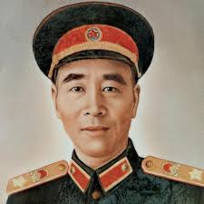

林彪
林彪（1907—1971），湖北黄冈人，中国人民解放军开国将领、军事家。他早年参加北伐战争和抗日战争，曾在长征和解放战争中担任重要军事指挥职务，对中国革命的胜利作出了重要贡献。
林彪军事才能突出，善于组织和指挥大规模作战。他在战争时期以勇敢果敢、战略灵活著称，为中国共产党和人民军队的建立与发展提供了宝贵经验。
在家庭和个人修养方面，林彪强调纪律、忠诚与勤勉。他教育子女要立志报国，严守品德，注重实践能力的培养，将个人成长与国家利益紧密结合。
林彪的革命事迹和家风，对湖北及全国红色教育产生过深远影响。他的军事才能和纪律观念成为研究中国革命历史的重要案例。
← 返回中国地图